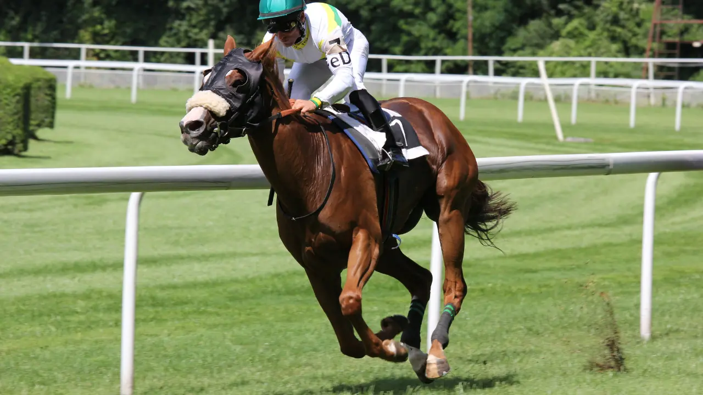

Hippodrome
Vincennes
Discipline
Trot Attelé
Distance
2850m
Corde
Gauche
Partants
18
Heure
20h15
| N° | Cheval | Driver | Cote |
|---|---|---|---|
| 1 | HERCOLE DE BEA | Mottier M. | 30 |
| 2 | HISCO DE PARNIERE | Gelormini A. | 45 |
| 3 | HANACK DE VIVON | Nivard F. | 45 |
| 4 | HELALI DE MONTCEAU | Martin C. | 60 |
| 5 | HIGH TECH ROC | Poutrel J. | 35 |
| 6 | HEROS DHELPA | Ouvrie F. | 12 |
| 7 | HAPPY ATOUT | Verva P. | 15 |
| 8 | GITANO JACK | Barrier G. | 10 |
| 9 | HELLO DE LOIRON | Rochard B. | 8 |
| 10 | HERDUNO | Delacour B. | 9 |
| 11 | HORACE DARTHENAY | Mottier M. | 14 |
| 12 | GENERAL DE CONNEE | Lagadeuc F. | 6 |
| 13 | HALFAN SPEED | Raffin E. | 7 |
| 14 | GUILI GUILI | Thomain D. | 18 |
| 15 | HIRIUS DE GUEZ | Lebourgeois Y. | 16 |
| 16 | FOREVER DE PAME | Bovay G. | 20 |
| 17 | HURLEVENT | Abrivard L. | 25 |
| 18 | GISARO | Baudouin L. | 4 |
Point d'appui de la soirée. A enlevé la course clé du mois d'août à Enghien sur la même configuration. Préparé en courant ferré à Pornichet. Près de 200 000 euros au compteur. Attention aux deux disqualifications récentes.
Retrouve Éric Raffin (64% de réussite dans les 5 premiers). Moyenne de gains la plus élevée du lot. Remise en route probante à Beaumont-de-Lomagne.
Cheval en forme. A enchaîné victoire puis deuxième place. Benjamin Rochard (62% de réussite). Aptitude à tenir l'effort sur 2850m.
Surprise possible avec Franck Nivard aux commandes. Cote alléchante autour de 45/1. Victoire et quatrième place récemment.
Sélection de 8 chevaux :
181393121567
Notre favori : 18 — GISARO
2ème : 13 — HALFAN SPEED
3ème : 9 — HELLO DE LOIRON
4ème : 3 — HANACK DE VIVON
5ème : 12 — GENERAL DE CONNEE
18 — 13 — 9
Chances : 12 combinaisons
18 — 13 — 9 — 3 — 12
Chances : 60 combinaisons
18 — 13 — 9 — 3 — 12 — 15 — 6 — 7
Chances : 336 combinaisons